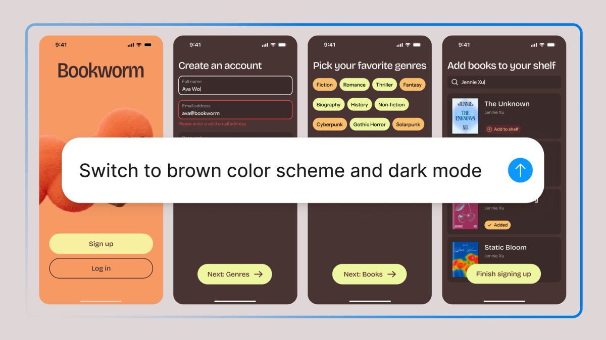
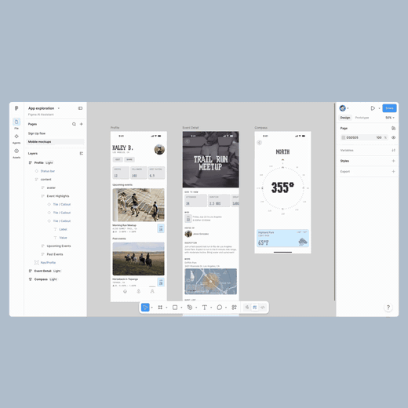
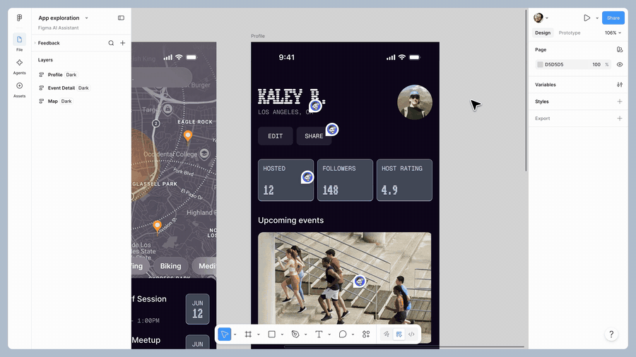
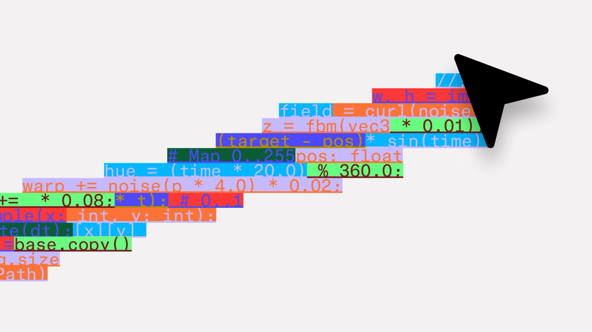

过去两年 AI 设计工具都站在画布外面：你提需求，它给一版结果。这次 Figma 把 Agent 拉到了画布里，跟设计师肩并肩工作。

产品负责人 Rodrigo Davies 和产品设计师 Tammy Taabassum 在发布博客里写了一句让人愿意停下来读两遍的话："Speed or precision? AI generation or direct manipulation? You shouldn't have to choose." 速度还是精准？AI 生成还是直接操作？你不必二选一。
这句话听上去像句口号，但它其实点破了过去两年所有 AI 设计工具的尴尬：你要么用 prompt 让 AI 给你出一版，但精准度全交给运气；要么自己拖控件改像素，但速度回到了 AI 出现之前。Figma Agent 的整个设计，是想把这道选择题撕掉。

假选择是怎么来的
过去用 AI 做设计，流程其实是线性对话：你写一句 prompt，AI 给你一版结果，你看完不满意再补一句 prompt，AI 再改一版。每一轮都得等，每一轮都得切上下文。
更糟的是，AI 通常只给你一个方向。你想看「如果做得更现代会怎样？如果换个有机风格呢？」你得自己一次次重写 prompt，一次次盯着 loading。
设计师本来最擅长的就是「同时在脑子里铺开几个方向」，结果 AI 工具反而把这个并行能力压扁成了串行队列。
Figma Agent 不想让设计师再去做这种排队的事。
同时跑多个方向
让 Agent 在背景里干活
Figma Agent 最大的变化在工作节奏。你可以同时发起多个 prompt，Agent 在画布上并行迭代，设计师在前面挑、改、定。
比如给同一个界面，让 Agent 同时出有机风格、现代风格、复古风格三种方向。三组结果并排出现在画布上，你不用一版版等，直接做横向对比。

这件事的妙处不在「快」，而在重新分配了设计师的注意力。AI 在背景里跑探索，设计师的脑子腾出来做判断。判断什么风格更贴品牌、什么排版更适合内容、哪个细节值得保留——这才是设计师该干的活。
用真实内容填充
而不是占位符
光看版式不够，设计稿要塞进真实内容才能看出问题。
Figma Agent 能直接拉真实图片填充画面，比如户外、运动场景的图像，还能给同一段标题尝试多种处理方式——加大字号、换字重、换排版结构。

这一步其实是把传统设计流程里最痛的一环搬到了 Agent 身上：「找图、试排版、看效果」。以前是设计师自己开几个标签页搜图、剪裁、塞进去，看完不行再换。现在 Agent 把这条链路自动化了，设计师专注看哪一版的内容和版式咬合得最好。
把繁琐工作交出去
设计师每天有相当一部分时间在做机械重复的整理活：跨多个屏幕替换一个组件、统一一组卡片的内边距、把散落的颜色换成 token 变量。
这些活有共性：规则清晰、但量大。Agent 最适合干。


你给一句指令，Agent 在几十个 frame 里穿来穿去做修改。重要的是，它认得设计系统——它知道「这个按钮」对应的是组件库里哪个 component，「主色」对应的是哪个 token。改完之后，整个文件依然是规范的，不是被 AI 糊出来的散件。
这正是 Figma 原生 Agent 跟第三方 agent 最大的差别。
把反馈也变成结构化输入
设计评审里最让人头疼的事不是改稿，是反馈太散。一个 frame 上挂二十条评论，有的讲配色、有的讲文案、有的讲交互，看完根本不知道从哪改起。
Figma Agent 能把这些评论按主题归类，再基于归类后的反馈，生成一个新的版本。

设计师拿到的不再是一堆零散的吐槽，而是一个已经吸收了反馈的草稿。你可以从这个草稿出发再迭代，也可以挑挑拣拣只用其中几处改动。
这一步的设计哲学其实很克制：Agent 不替你做决定，它只是把噪音整理成信号，把信号转成可见的草稿。最终是不是采纳，还在设计师手里。
原生 Agent 跟第三方 agent 不是同一件事
市面上接入 Figma 的 AI 工具不少，Cursor、Lovable 这些都能从 Figma 拉设计文件。但它们都是从外部读 Figma，Figma Agent 是长在 Figma 里的。
差别在于上下文。
第三方 agent 看到的是导出的图层和图片，它不知道你的设计系统、组件库、token、变量、最佳实践长什么样。生成出来的东西可能好看，但接不回你的系统里。
Figma 原生 Agent 不一样，它跟设计系统是连着的。你可以 @ 提及具体的 token、变量、组件来引导它的输出，它生成的东西天然就符合规范。

跟 MCP 服务器的关系也是互补的，不是竞争。MCP 管的是代码与画布的同步，画布改了代码跟着改、代码改了画布跟着改；Agent 管的是画布内的设计创作。两边各管一段。
好的设计系统遇到 Agent，是乘数效应；没有设计系统的 Agent，是危险品。这句话值得每个团队记一下。
反共识的那句
Rodrigo Davies 在文章里还说了一句更锋利的话："as AI makes it easier to generate designs, the risk is shipping something average." AI 让生成设计变得越来越容易，风险是交付平庸的方案。
这是一句反共识。大部分人会觉得「AI 让生成变容易」是好事，但容易生成 = 容易接受第一版 = 交付平庸。
Figma Agent 的整个设计就是为了对抗这个倾向。它不是让你更快出第一版，它是让你同时探索更多方向，再挑出最好的那个。
设计师跟 Agent 的关系，因此从「我提示 → 它给一版 → 我接受」的快餐模式，变成了「我发起一组探索 → 它在背景里并行迭代 → 我在前面挑、改、定」的工作室模式。
Agent 在画布上，团队也在画布上，没有切上下文的成本。设计师的判断力，比以前任何时候都更重要。
Beta 期间使用 Figma Agent 不消耗 AI credits，正式发布后会消耗，目前需要申请 waitlist 等被选中。
◎ △ ○
本文素材来自 Figma 官方博客 The Figma design agent is here。